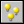
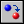
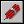
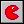
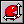
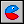
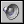
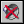
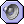

主要动作 分组1
这组动作可以用来创建，更改和销毁对象的实例，操作房间和声音。
创建实例
创建一对象的实例。可指定创建哪种对象及创建实例的位置，假如你勾选相对复选框，则创建位置为相对于当前实例的位置。在游戏中创建实例是相当有用的：如一艘宇宙飞船可以创建子弹、一炸弹可以创建一个爆炸等等。在一些游戏中你还将要一个控制对象来不时地创建怪物或其它的对象。在新的实例被创建时，会执行被创建对象的建立事件
创建一移动实例
与上面的功能类似，但有两点不同。这动作不但可以在某位置创建一个实例并可给予它一个运动方向和速度值，使之开始运动。当勾选了相对复选框时，只是位置相对，而不是速度和方向。例如，用这动作创建移动的子弹有个小技巧。在相对于飞机的位置0，0创建子弹。方向就用飞机的方向，直接在方向上输入direction。（这是一个表示当前飞机的移动的方向变量。）

随机创建实例
你可以用这动作创建指定的四种对象中的一种创建实例。你要定义这四种对象和创建位置。这四种对象中的其中一种会创建于该位置上。如果选了相对，创建位置会相对于当前位置。如果你想选择少于四个对象，可以用“No object”表示。这可用于在某个位置创建随机敌人。

更改实例
将当前实例换成别的对象实例。例如，你可以将一炸弹实例更换为一爆炸实例。更改后全部的设定值，如运动或是相关变量的数值，保持相同。你可以指定是否在当前对象上执行销毁事件及为新对象执行创建事件。
销毁实例
执行这个动作可以销毁当前实例， 实例在被销毁时会发生销毁事件。

销毁指定位置实例
用此动作让你摧毁所有进入到某一位置的实例。例如，当你让一个炸弹在某处爆炸时相当有用，当你勾选相对复选框，则该位置为相对于当前事件发生对象的坐标。

更改实例精灵
这个动作可以用于更改实例的精灵图像。你指定新的精灵图像，如果是gif动画的图象还可以指定它的桢数。通常都用0（第一张图象）。如果你不想更换当前显示的子桢图象的时候，你也可以用-1。最后，你可以指定精灵图象动画的速度。如果只想看到某一确定的子图，可以将速度设置成0。如果速度比子图象个数大，会循环跳桢显示。不要使用一个负的速度值。更改精灵图象是比较重要的。例如，你常常想按实例走动的方向来设定不同的精灵图像，可为角色在每一方向（一般为四个方向）做一不同精灵图像。在键盘事件内用箭号按键来指定运动的方向和更改精灵图像。

精灵变换
使用此动作用来更改实例精灵图像的大小和方向。使用缩放值来放大和缩小图象，使用度数值来使精灵产生逆时针旋转。例如，可以在度数输入“direction”让精灵按照运动方向值来旋转，这对汽车之类的对象来说十分有用。同时可以让指定图像水平或者竖直翻转。此动作仅在专业版可用。

精灵混合着色
使用这个动作你可以改变精灵图形的颜色。你定义的这个颜色和当前精灵图象混合显示，如果你想在游戏中用不同的颜色 来显示一个精灵图象你最好把精灵图形制作为一个黑白的图象并用混合颜色来改变它的颜色。同时你也可以指定精灵图象的显示透明度。数值1为完全不透明，0为完全透明。中间值用来设置部分透明效果。这个动作用来制作爆炸效果时非常好的。
这个动作仅可在专业版可用

播放声音
使用这个动作你可以播放一个先前增加到你的游戏中的声音。你可以指定播放声音的方式，播放一次（默认值）或循环播放。多个wave格式的声音是可以同时播放的。如果你使用midi文件那么一个时间内你只能播放一个文件，其它的midi会停止。

停止声音
停止播放指定的声音，假如多个实例的这种声音都正播放，则全部停止。

如果声音正在播放
如果有一个指定的声音正在播放那么执行下一个动作。否则就跳过执行下个动作而执行后面的动作。你可以勾选非 得到相反的效果。比如你可以用这个动作来测试是否有背景音乐正在播放，没有的话就播放一个新的背景音乐。 请注意，只有当声音真正通过扬声器播放出来时，这个动作才会返回true。由于调用动作播放声音后，声音不会立即到达扬声器，因此该动作可能仍然会返回false。 另外，当声音停止时，你可能还会听到一会儿声音（例如由于回声），这时这个动作仍会返回true。
上一个房间
移动到前一个房间。 您可以指定房间之间的过渡效果的类型，最好每种都尝试一下，看看什么最适合。 当两个房间大小不同时，最好不要使用过渡效果。 如果你在第一个房间执行该动作，游戏会报错。
下一个房间
移到下一个房间，也可以指定过渡效果。
重启房间
当前房间会重新开始，你可以指定过渡效果。
房间跳转
用这个动作可以让你到达指定的房间，可以指定过渡效果。
如果上一个房间存在
这个动作测试是否有上一个房间。如果有下一个动作就被执行，你可以使用这个动作测试是否有上一个房间。
如果下一个房间存在
这个动作测试是否有下一个房间。如果有下一个动作就被执行，你可以使用这个动作测试是否有下一个房间。